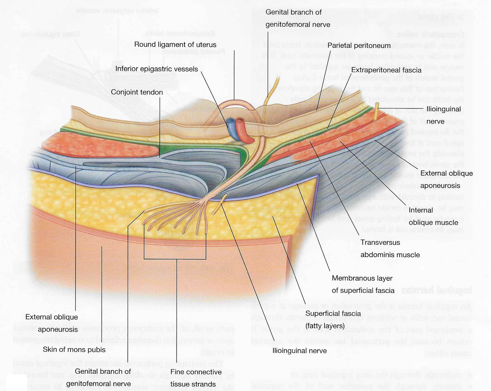

Female Pelvis and Genitalia: Module 1 - Page 4 of 7
Now add the components of the female pelvis in order to see how these are suspended in the pelvis:
| Rotate the female pelvis to the anatomical position. | |
| Add the rectum and sigmoid colon. | |
| Add the vagina. | |
| Add the ureters. | |
| Add the uterus. | |
| Add the round ligament of the uterus. |
The embryologic gubernaculum becomes the round ligament of the ovary and uterus in females. What does the gubernaculum become in males? |
|
|
The gubernaculum in males pulls the testis into the scrotum and becomes the attachment point for the testis to the scrotal wall. |
|
Where does the round ligament attach in females? |
|
|
The round ligament follows the path of the spermatic cord in males, but attaches in the area of the labia majora.  |
|
This artery will be removed for clarity in the following steps.